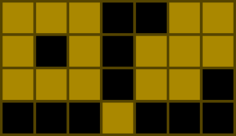

Single Round Match 532 Round 1 - Division II, Level Three
Mr. Dengklek lives in the Kingdom of Ducks, where humans and ducks live together in peace and harmony.
One day, the queen of the kingdom challenged Mr. Dengklek with a perplexing puzzle: she gave Mr. Dengklek an N × M board made of wood that consists of N*M squares. She then asked Mr. Dengklek to paint the squares according to these rules:
Each square must be either colored or empty. Each colored square must have an even number of adjacent colored squares. Two squares are adjacent if they share a side. For example, here is one valid solution for N=4, M=7:

In the above image, black squares denote empty squares and brown squares denote colored squares.
Of course, finding one solution to the puzzle is easy: we do not color anything. Instead, the queen asked Mr. Dengklek a much harder question: to count all valid solutions of the puzzle. Help Mr. Dengklek count the solutions and return the result modulo 1,000,000,007. Two solutions are different if there is a square that is colored in one solution and not colored in the other solution.
DengklekPaintingSquaresnumSolutionsint, intintint numSolutions(int N, int M)
1
Either Mr. Dengklek colors the square, or he does not. Both choices produce a valid solution.
2
Here are the 8 valid solutions:
3
7